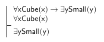

What does it mean for a sentence to be a first order logical consequence of some other sentences? (2 points)
It means that the sentence follows necessarily from the others in part due to the meaning of the quantifiers involved in the sentences.
What does it mean for a sentence to be an axiom of a logical system? (3 points)
It means that it is a sentence that we take to be a logical truth without any support from other sentences in the logical system
Explain why ∀x (Dodec(x) ∧ ∃y Larger(x,y)) → Tet(y) is not a sentence of FOL? (3 points)
The last occurrence of y in the formula lies outside the scope of any quantifier. This means that it is unbound, and all variables in sentences of FOL must be bound.
Fill in the blanks below with the logical concept that best completes the sentence. Draw your answers from the list of concepts provided. Each concept is used at most once; some will not be used at all. (3 points each)
∀x (Cube(x) ∨ Tet(x) ∨ Dodec(x)) is an example of a presupposition of a set of circumstances for the blocks universe.
If substituting an object in for a variable in a wff creates a true sentence, then we say the object satisfies the wff.
¬∀x Happy(x) ⇔ ∃x ¬Happy(x) is an instance of DeMorgan's laws for quantifiers.
We know that ∀x (P(x) ∧ Q(x)) is equivalent to ∀x P(x) ∧ ∀x Q(x) because the universal quantifier distributes over conjunction.
The basic forms of quantificational sentences, such as No Ps are Qs, are called the Aristotelian forms .
Logical truths whose status depends on the meaning of the predicates in the sentence are known as analytic truths .
A bound variable is within the scope of a quantifier.
¬∃x (Large(x) ∧ Medium(x)) is an example of a basic size axiom of the blocks language.
When a sentence follows from other sentences on the basis of the quantifiers involved, it is called a first-order logical consequence.
Quantifiers are used in FOL to talk about objects in a general way.
Translations
For each of the English sentences below, write an appropriate translation into FOL. (3 points each)
Everything is either a cube or a tetrahedron. ∀x (Cube(x) ∨ Tet(x))
Every cube is to the left of every tetrahedron. ∀x (Cube(x) → ∀y (Tet(y) → LeftOf(x,y))
Every small cube is in back of some large cube. ∀x ((Small(x) ∧ Cube(x)) → ∃y (Large(y) ∧ Cube(y) ∧ BackOf(x,y)))
No cube is to the right of anything. ¬∃x (Cube(x) ∧ ∃y RightOf(x,y))
Everything is the same size as something else. ∀x ∃y SameSize(x,y)
Anyone who owns a dog feeds it. ∀x ∀y ((Owns(x,y) ∧ Dog(y)) → Feeds(x,y))
Only pets that are hungry are fed. ∀x (Fed(x) → (Pet(x) ∧ Hungry(x)))
Everybody want somebody to love. ∀x ∃y Want-to-Love(x,y)
Some students attended every class. ∃x (Student(x) ∧ ∀y (Class(y) → Attend(x,y)))
There is someone out there for everyone. ∃x (OutThere(x) ∧ ∀y For(x,y))
Assessing truth
Using the world above, indicate whether each of the FOL sentences below is true, false, or not evaluable by placing a T, an F, or an N to the left of each sentence. (2 points each)
Logical consequence
Each of the arguments below is valid, but they may be invalid by certain notions of logical consequence. For each argument state whether it is tautologically valid, first-order valid, or analytically valid(2 points each). If the argument is tautologically valid, translate it into truth-functional form and indicate what proof rule it is an instance of. If it is first-order valid give a counterexample to its truth functional form. If it is analytically valid provide a replacement form that shows it is not a first order consequence. (2 points each)
Argument 1

Argument 2
Argument 3
Imagine a world in which a is a cube, and b and c are tetrahedrons.
Bonus
The argument below is first-order invalid. Replace the predicates with random ones, and describe a counterexample world that shows the argument to be invalid. (3 points)
Replace "Larger" with "Adjoins" and imagine a world in which c and d are next to each other, but a and b are in opposite corners away from everything else.
English has lots of quantificational language that is neither universal nor existential. Provide an example. (2 points)
Most, many, a few, at least 3, a bunch, ...
Translate the following English sentence into FOL. (3 points)
You can fool all of the people some of the time, and some of the people all of the time, but you can't fool all of the people all of the time.